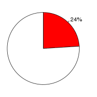
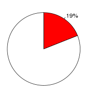
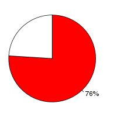

C.intestinalis (Ciona intestinalis, JGI2) and C.savignyi(Ciona savignyi, CSAV2.0) were aligned using the BlastZ alignment algorithm (Schwartz S et al., Genome Res.;13(1):103-7, Kent WJ et al., Proc Natl Acad Sci U S A., 2003;100(20):11484-9) in Ensembl release 39. C.intestinalis was used as the reference species. After running BlastZ, the raw BlastZ alignment blocks are chained according to their location in both genomes. During the final netting process, the best sub-chain is chosen in each region on the reference species.
Full list of pairwise alignmentsNumber of alignment blocks: 146857
| Genome coverage(bp) | Coding exon coverage (bp) | |
|---|---|---|
| C.intestinalis |  |
|
| 41,743,223 out of 173,499,994 | 13,959,724 out of 16,722,294 | |
| C.savignyi |  |  |
| 33,661,961 out of 176,989,013 | 10,543,174 out of 13,806,906 |